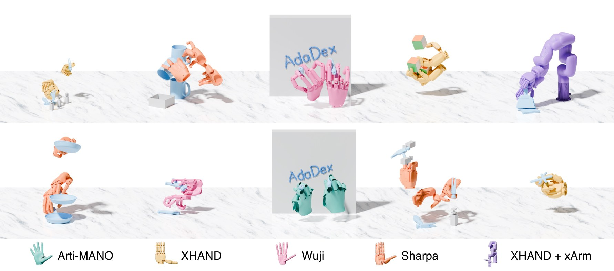
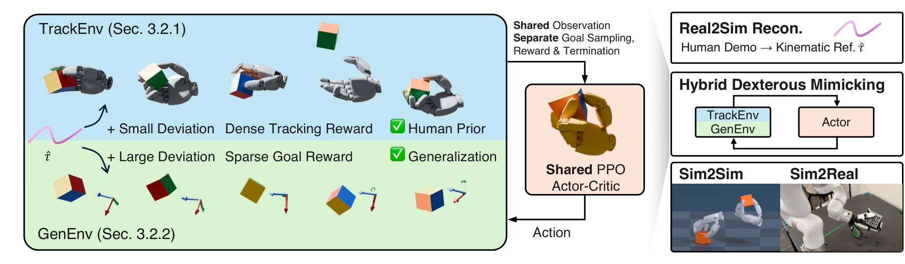
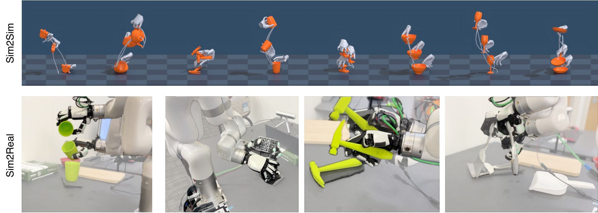

Pen spin & pickup
In-hand rolling and spinning with finger gaiting.
Dexterous multi-finger hands hold promise to unlock diverse skills like functional grasps, in-hand reorientation, and dynamic handover that the human-designed world assumes, yet existing learning recipes force a trade-off. Goal-reaching reinforcement learning generalizes to arbitrary object poses but, lacking any human prior, converges to unnatural and unreliable finger strategies; motion tracking reproduces human-like behavior from a single clip but cannot deviate from it. We present AdaDex, a goal-conditioned RL framework that turns a single hand-object trajectory of a few seconds—from mocap data or HOI reconstruction from in-the-wild RGB(D) video—into an adaptable dexterous skill.
At the core of AdaDex is Hybrid Dexterous Mimicking: a shared policy is trained on two populations of massively parallel environments: motion tracking environments trained with dense motion tracking objective, which instill the human prior from human motion; and generalization environments with noised initial states and goals and a sparse object-success reward, which force the skill to work far off the reference. From seconds of human motion per skill, the resulting policies can learn diverse adaptable dexterous skills, such as functional grasping, object reposing, in-hand reorientation with finger gaiting, and dynamic behaviors like throw-and-catch. Our method outperforms baselines in terms of generalization and functionality, and we demonstrate transfer across simulators and to the real world.
The same recipe learns from in-the-wild video, drives downstream tasks from new goal sequences, and transfers across robot hands.

Skills learned from seconds of human motion, driven by new sequences of wrist and object goals.
In-hand rolling and spinning with finger gaiting.
Dynamic throw-and-catch, and picking up and reorienting a cube in hand.
Picks up the marker, reorients it in hand into a writing grasp, then writes by following waypoints.
Tossing an object with a frying pan.
Functional hammer grasp striking new targets.
Grasp, lift, and tilt a mug to pour into a container.
Sweeping objects into a bin with a hand-held brush.
Kinematic reference: the human demonstration this skill was learned from (human hand and object motion), shown for reference only, not a policy rollout
XHand · marker spin
XHand · marker spin
Wuji · pick up & roll
ArtiMANO · pick up & roll
Sharpa · pick up & roll
Wuji · pick up & roll
ArtiMANO · marker spin
Kinematic reference: the human demonstration this skill was learned from (human hand and object motion), shown for reference only, not a policy rollout
XHand · reorient, throw & catch
Throw & catch · XHand
Pick up & reorient · XHand
Kinematic reference: the human demonstration this skill was learned from (human hand and object motion), shown for reference only, not a policy rollout
Wuji · writing
ArtiMANO · writing
ArtiMANO · writing
Kinematic reference: the human demonstration this skill was learned from (human hand and object motion), shown for reference only, not a policy rollout
Sharpa · pan toss
Wuji · pan toss
XHand · pan toss
ArtiMANO · pan toss
Sharpa · pan toss
Wuji · pan toss
Kinematic reference: the human demonstration this skill was learned from (human hand and object motion), shown for reference only, not a policy rollout
Sharpa · hammering
Wuji · hammering
XHand · hammering
ArtiMANO · hammering
Sharpa · hammering
Wuji · hammering
Kinematic reference: the human demonstration this skill was learned from (human hand and object motion), shown for reference only, not a policy rollout
Wuji · pouring
Sharpa · pouring
XHand · pouring
Sharpa · pouring
Wuji · pouring
XHand · pouring
Kinematic reference: the human demonstration this skill was learned from (human hand and object motion), shown for reference only, not a policy rollout
ArtiMANO · sweeping
ArtiMANO · sweeping
Human references are retargeted to different dexterous hands and learned without changing the method.
Tracking and goal reaching with ArtiMANO.
Tracking and goal reaching with XHand.
Tracking and goal reaching with Sharpa.
Tracking and goal reaching with Wuji.
Mug · tracking
Mug · noisy goals
Pen · tracking
Marker · tracking
Marker · tracking
Frying pan · cook · tracking
Hammer · use · tracking
Mug · noisy goals
Frying pan · cook · noisy goals
Marker · tracking
Hammer · use · noisy goals
Marker · tracking
Mug · tracking
Mug · noisy goals
Pen · tracking
Pen · noisy goals
Marker · tracking
Frying pan · cook · noisy goals
Mug · tracking
Mug · noisy goals
Marker · tracking
Marker · tracking
Frying pan · cook · tracking
Hammer · use · tracking
A few seconds of casual RGB-D video become a simulation-ready hand-object reference, which AdaDex turns into an adaptable skill. Here, in-hand reorientation of a cube.
Left: reconstructed reference (goal object pose and wrist frame) · Right: AdaDex rollout
HOI reconstruction from the same casual RGB-D video with our pipeline, Do-As-I-Do, and EgoInfinity. Background details in the raw videos are blurred for anonymity.
Motion tracking and goal reaching are the same goal-conditioned problem: both ask a policy to bring the object and wrist to a target pose, and differ only in where the goal comes from and how progress is rewarded. Hybrid Dexterous Mimicking trains one shared policy across two populations of massively parallel environments.

We benchmark on 12 GRAB sequences. Each policy is trained on only one motion per object and evaluated on that motion, on two similar but unseen motions, and on randomly generated goals. Below, the motion tracking baseline ManipTrans and the goal-reaching baseline SimToolReal are compared against AdaDex on all 36 benchmark motions: pick a motion to see the rollouts side by side with the human reference.
| Method | Progress (%) ↑ | Obj. pos. err. (cm) ↓ | Obj. rot. err. (°) ↓ | Wrist pos. err. (cm) ↓ | Wrist rot. err. (°) ↓ |
|---|---|---|---|---|---|
| Setting (i): seen (trained) motions | |||||
| ManipTrans | 35.20 ± 29.71 | 13.69 ± 16.11 | 41.61 ± 40.97 | 45.55 ± 65.28 | 55.22 ± 44.03 |
| SimToolReal | 9.72 ± 5.44 | 22.15 ± 18.32 | 53.56 ± 26.77 | 21.43 ± 9.79 | 65.30 ± 21.25 |
| w/o TrackEnv | 8.45 ± 4.98 | 34.10 ± 20.38 | 76.64 ± 31.72 | 3.65 ± 1.81 | 42.52 ± 25.23 |
| w/o GenEnv | 97.47 ± 8.40 | 0.62 ± 0.29 | 2.24 ± 0.79 | 2.76 ± 0.51 | 8.16 ± 4.73 |
| AdaDex | 96.74 ± 6.21 | 0.72 ± 0.32 | 4.16 ± 1.19 | 2.82 ± 0.61 | 11.45 ± 5.26 |
| Setting (ii): similar but unseen motions | |||||
| ManipTrans | 7.28 ± 6.57 | 37.95 ± 20.67 | 88.49 ± 26.81 | 256.50 ± 199.19 | 114.53 ± 21.40 |
| SimToolReal | 13.68 ± 17.88 | 19.80 ± 16.20 | 50.45 ± 25.85 | 24.34 ± 10.44 | 93.52 ± 33.78 |
| w/o TrackEnv | 9.62 ± 17.71 | 25.77 ± 16.92 | 63.15 ± 35.06 | 14.24 ± 8.11 | 79.26 ± 38.84 |
| w/o GenEnv | 31.75 ± 31.23 | 23.25 ± 22.82 | 52.13 ± 38.84 | 31.13 ± 23.28 | 87.91 ± 33.98 |
| AdaDex | 80.02 ± 26.01 | 6.07 ± 7.60 | 15.83 ± 12.93 | 14.32 ± 7.62 | 72.68 ± 44.90 |
Best in bold, second best underlined. Progress is the fraction of the clip tracked before the object deviates by more than 5 cm or 20°.
| Method | Progress (%) ↑ | SR (%) ↑ |
|---|---|---|
| ManipTrans | 1.72 ± 2.27 | 0.00 ± 0.00 |
| SimToolReal | 44.60 ± 31.59 | 31.71 ± 32.56 |
| w/o TrackEnv | 4.34 ± 7.38 | 1.43 ± 3.58 |
| w/o GenEnv | 14.53 ± 9.22 | 0.52 ± 1.03 |
| AdaDex | 51.80 ± 21.80 | 27.08 ± 17.41 |
Each trial attempts 10 consecutive procedural object goals. Progress is the percentage of goals reached; SR is the percentage of rollouts reaching all 10.
Policies trained in Isaac Gym transfer to MuJoCo without retraining. In the real world we test three GRAB motions (apple, hammer, cup) and two real-to-sim motions (sweep, AprilCube), open-loop replaying the joint targets generated by the policy at 1x speed (30 Hz) so the real-time dynamics are preserved.

The same policy on each GRAB benchmark motion, rolled out in Isaac Gym and transferred zero-shot to MuJoCo without retraining.
A simulated rollout with an XHand mounted on an xArm, controlled by the same goal interface.
Open-loop real-world rollouts: the joint targets generated by the policy in simulation, replayed on the real arm-hand system at 1x speed (30 Hz). Pick a rollout below.